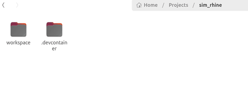
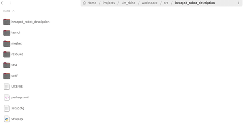
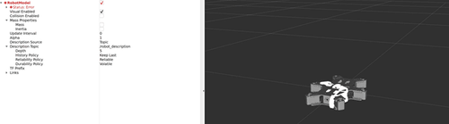
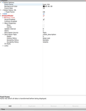
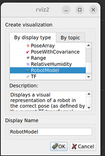
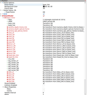

There was a time PhantomX had one in it’s product line so I started from wat I kind find over the PhantomX Hexapod. It’s been for educational purposes but I thought I might share my insights and learnings for the benefit of others.
The computer setup I’ve used for the practical execution of this article is a laptop Alienware Alienware m17 R3 with a Intel® Core™ i9-10980HK × 16 and NVIDIA GeForce RTX™ 2070 Super installed with CUDA drivers. My operating system is Ubuntu 24.04.2 LTS with also docker installed.
Prerequisites
- Laptop or computer with Linux installed. For MacOS or Windows you can still use this tutorial but you’re more on your own.
- An existing xacro file as we need a model to show and control in Rviz, I’ve used this one from github: https://github.com/KevinOchs/hexapod_ros/blob/master/hexapod_description/urdf/phantomX_model.xacro.
- Docker installed
Subjects which are covered in this article:
- create a devcontainer
- create a ros2 workspace
- create the first ros2 package
- update xacro for use with ros2 tags
- run rviz2
- spawn model in rviz2
- create second ros2 package
- install ros2_control framework
- implement Joint State Broadcaster
- implement and configure own controller
Key Concepts
ROS 2 – Robot Operating System Framework version 2. The name may be confusing but is a rather larger framework which is highly extendable.
Rviz2 – Robot Visualization tool version 2 for visualizing information of sensors, robotdata among other data in a 3D surrounding.
URDF – The Unified Robot Description Format is an XML-based format used to represent a robot's physical structure, including links, joints, and their properties.
Xacro - XML Macros is a language used to simplify and organize URDF (Unified Robot Description Format) files for robot modeling.
DevContainer - A development container (or dev container for short) allows you to use a container as a full-featured development environment.
ros2_control - Is a ROS 2 framework designed for real-time control of robots, providing a standardized way to interact with hardware and deploy control algorithms.
Gazebo/Ignition - 3D, open-source robotics simulator developed by Open Robotics.
Create a devcontainer
Since the first release date of docker back in 2013 the functionality looks promising. And now there is not a single developer which hasn’t heard of docker. A devcontainer is a docker container where your development activities will be performed.To create a devcontainer you’ll need at least two things, a devcontainer.json file and a Dockerfile in a hidden devcontainer folder (.devcontainer). I’m encouraging the use of at least docker while developing because containerization will save you a lot of configuration debugging at your local machine if you’ll end up mixing projects.
To begin we need a project folder which I’ve made in my home folder but you’re welcome to have the project folder on a place which will suit you better. I’ve named it sim_rhine for reasons, and in the project folder (~/sim_rhine) I’ve created the devcontainer folder. By default it will be .devcontainer. Make sure it is accessible by your account.
In the .devcontainer folder I’ve created the Dockerfile first. The Dockerfile content will look something like this:
FROM ros:jazzy
# Install basic tools
RUN apt-get update && apt-get install -y \
curl \
git \
python3-pip \
&& rm -rf /var/lib/apt/lists/*
# Source ROS2 setup
SHELL ["/bin/bash", "-c"]
RUN echo "source /opt/ros/jazzy/setup.bash" >> ~/.bashrcThis is a default template for a ros2 jazzy Dockerfile which contains nothing more than a basic installation of ros2 Jazzy and some supported tools such as Python support among others. We’ll use bash as it is commonly used with ROS and Jazzy is the latest LTS version of ROS2.
And then we need to give the devcontainer the configuration to pass to the IDE how we want to configure the devcontainer. Create the devcontainer.json file and let’s put in the basic template I found:
{
"name": "ROS 2 Dev Container",
"build": {
"dockerfile": "Dockerfile"
},
"workspaceFolder": "/workspaces/sim_rhine",
"mounts": [
"source=${localWorkspaceFolder}/workspace,target=/workspace,type=bind"
],
"runArgs": [
"--env=DISPLAY=${env:DISPLAY}",
"--env=XDG_RUNTIME_DIR=${env:XDG_RUNTIME_DIR}",
"--volume=/tmp/.X11-unix:/tmp/.X11-unix:rw",
"--device=/dev/dri", // GPU toegang --gpus=all for NVIDIA devices
"--privileged" // nodig voor sommige GUI lib access
],
"settings": {
"terminal.integrated.shell.linux": "/bin/bash"
},
"extensions": [
"ms-vscode.cpptools",
"ms-iot.vscode-ros"
],
"postCreateCommand": "/bin/bash -c 'source /opt/ros/jazzy/setup.bash && rosdep update && pip3 install -r /workspaces/sim_rhine/workspace/requirements.txt --break-system-packages' "
}To explain a bit more about the devcontainer json settings per key:
- Name is the name of the devcontainer.
- build.dockerfile holds the name of the Dockerfile which stays at the default: Dockerfile.
- WorkspaceFolder is the local folder within the container where the project resides.
- Mounts is the mapping of the host to the container.
- RunArgs is rathr important for the docker to know which arguments are passed on. especially for passing graphical display to the host, gpu support and access to the host devices.
- Settings is used for additional settings, in this case it has a setting for vscode when opening a terminal which shell is used.
- Extensions states which extensions are active when the devcontainer is active.
- PostCreateCommand runs the command when the Dockerfile is successfully built and started. Already stated the install from file with requirements.txt for future use. In this case a single place to state the used python libraries and even versions will be useful.
On the host machine I’ve also created the folder workspace in the sim_rhine project folder for the ros workspace to reside.
This should leave you with the following overview:

If you’ve had VS Code open, you should close it. Open VS Code and open the folder sim_rhine or you custom named folder.
If the devcontainer config is succcesfully configured VS Code will ask to open the container after rebuilding it. Click on the ‘build container’ button or ‘rebuild container’ button. The build will take some time.
When the devcontainer has started after the build is done, we’re ready to start working.
Update the xacro file to ROS2 compatible variant
When you open the xacro of the github link provided earlier you’re able to see that the hexapod xacro model was created for ROS 1 because of different tags and bindings towards ros_control and the hardware interfaces. You’ll need to update the file to be compatible for ROS 2 so it needs a bit of rework. This is what I’ve done to update the file so it’s compatible with ROS2.
The old xacro which still resides in stale status on the repository can be seen here: https://github.com/KevinOchs/hexapod_ros/blob/master/hexapod_description/urdf/phantomX_model.xacro.
This repository has come to my attention as it was the only space on the internet I could find a phantomx xacro file for testing purposes on a hexapod project. Only setback was the focus on ROS 1 which is no surprise when you look at the timestamps.
I’ve started from the top of the xacro file. Here you can see the following lines of code:
<gazebo>
<plugin name="gazebo_ros_control" filename="libgazebo_ros_control.so">
<robotNamespace>/phantomX</robotNamespace>
</plugin>
</gazebo>
The gazebo_ros_control is an old binding for ROS1 because ROS2 bindings all have the version stated in the name.
Also the socket filename is an old link to a ROS 1 gazebo socket. We’re not implementing the gazebo launch script yet it is still useful to change it on forehand to the ROS 2 bindings.
<gazebo>
<plugin name="gz_ros2_control" filename="libgz_ros2_control-system.so">
<ros>
<namespace>/phantomX</namespace>
</ros>
</plugin>
</gazebo>Rviz2 will ignore these lines so the generated URDF from the xacro file can be used by Gazebo and Rviz. As this block of code is good enough for use with rviz2 as it doesn’t use it, an option to consider is to add the parameter tag and add the reference to the hexapod_controllers.yaml when working with Gazebo.
Focus for now is to get the rviz2 tool to work as expected. What needs to be done is to add the ros2_control tag and add the joint information in the xacro file. For our hexapod example it means 18 joints so 18 entries within this tag. An example of such a tag will be:
<ros2_control name="HexapodHardware" type="system">
<hardware>
<plugin>mock_components/GenericSystem</plugin>
</hardware>
<joint name="coxa_joint_RF">
<command_interface name="position"/>
<state_interface name="position"/>
<state_interface name="velocity"/>
</joint>
</ros2_control>And after all the joints are added don’t forget to close the ros2_control tag. You can duplicate some code of the leg generation to make it easier to add the joints before ending up hard coding a long list.
The joint names need to adhere to the hexapod_controllers.yaml joint definitions. The binding will not be successful if there are inconsistencies.
Also be aware the meshes with the stl files are loaded in this xacro file. So if you’ll lookup one of the stl files by searching for “.stl” . You’ll get an entry like this:
<mesh filename="package://hexapod_description/meshes/phantomX/tibia.stl" scale="0.001 0.001 0.001"/>
Change the package name accordingly to your name. In this example it would be hexapod_robot_description.
-- Small sidestep to Gazebo (Ignition) --
When Gazebo simulation launches the URDF file it will also load the controller yaml when given as a value to the parameter tag within the gazebo code block. For example:
<gazebo>
<plugin filename="libgazebo_ros2_control.so" name="gz_ros2_control">
<parameters>$(find hexapod_robot_description)/config/hexapod_controllers.yaml</parameters>
</plugin>
</gazebo>
The beauty of Gazebo is that the controller manager which is responsible for the input and output of the controller of the corresponding model can be loaded at the same time the URDF is loading in the simulation. With rviz the controller functionality is isolated from the URDF as it will need a separate launch script to launch the controller_manager and custom controllers.
Create the robot_description ROS2 package
The project I’ve created had two packages with one being responsible for starting rviz2 and the robot state publisher. The second package is responsible for the configuration and starting of ros2_control_node, joint state broadcaster and the own created hexapod_controller.
I will probably change this in the future as it looks like a circular dependency is created, not entirely but close enough to think about it. Let’s create them and discover all the power in your hands without even buying or assembling your own robot.
Open a terminal in VS Code in the window where the devcontainer is loaded. The terminal opens on the container. Change directory to the workspace folder, create a src folder first ‘mkdir -p src’ .
Go into the src directory and create the first ros2 package which is responsible for the robot description and model data. You can generate a package with the commandline.
ros2 pkg create --build-type ament_python <package_name> --license MIT
Depending on which license you want to use you can alter the value or keep it away. When the license parameter is not given, no license is generated.
I’ve named the package hexapod_robot_description and I’ve called the command when I was in the src folder from the terminal. After this a ros2 package is created with template code for python.
I want to do the following in the hexapod_robot_description to let it perform as expected from a robot_description package, getting the robot_description!

There are some rules about the package structure which need some explanation.
- The source code will reside in a subfolder which has the same name as the package name.
- A folder launch is created for the launch files
- The folder resource is created for eventual resources
- The test folder is for tests of your code.
Other folders are within convention also created in the root of the package like meshes and urdf.
After creating the package I’ve created the urdf folder and copied the phantomX_model.xacro file to the urdf folder.
I’ve also created the meshes folder and copied the stl files regarding the phantomX_model to this folder for rendering purposes.
The hard part is the right configuration. As we’ve got the urdf and meshes folder created and files copied, these files might not be used with the install process and other packages might also need access to these files such as the stl files.
Our first step will be to open up the setup.py and add the urdf and meshes folder to it’s install procedure.
Add the following lines to the data_files variable.
(os.path.join('share', package_name, 'launch'), glob('launch/*.py')),
(os.path.join('share', package_name, 'urdf'), glob('urdf/*')),
(os.path.join('share', package_name, 'meshes', 'phantomX'), glob('meshes/phantomX/*.stl')),Don’t forget to add the right import statements which are not there by default.
import os
from glob import globBy adding them to the share folder the files will be accessible by other packages.
Now to add Rviz2 support you’ll need to edit the Dockerfile and add ros-jazzy-rviz2
package to the apt install command so it’s binaries are in the docker container.
We now want to create the launch file where the launch file will process the xacro and generate the urdf which will be published on the hexapod_robot_description topic and start the robot_state_publisher and rviz2.
The launch file will look llike this:
from launch import LaunchDescription
from launch_ros.actions import Node
import xacro
from ament_index_python.packages import get_package_share_directory
import os
def generate_launch_description():
xacro_path = os.path.join(
get_package_share_directory('hexapod_robot_description'),
'urdf',
'phantomX_model.xacro'
)
# Generate URDF from Xacro
robot_description_urdf = xacro.process_file(xacro_path).toxml()
return LaunchDescription([
Node(
package='robot_state_publisher',
executable='robot_state_publisher',
name='robot_state_publisher',
parameters=[{'robot_description': robot_description_urdf}],
output='screen'
),
Node(
package='rviz2',
executable='rviz2',
name='rviz2',
output='screen',
arguments=['-d', os.path.join(get_package_share_directory('hexapod_robot_description'), 'rviz', 'model.rviz')]
)
])Where if you haven’t got a model.rviz file already you’ll need to add the RobotModel view in Rviz. That’s later in the process.
Here you can see it’s retrieving the xacro, processing it and pass it as a parameter to the robot_state_publisher node as the robot_description. When you want to read it you can do that manually with a command from the commandline:
`ros2 param get /robot_state_publisher robot_description`
The output should look like XML structured.
The Rviz node will show when you’ve succesfully configured the X11 server pass-through the host computer. A blank rviz screen will appear, after a view steps to configure rviz to show our model.
Steps:
- Change the value of Fixed Frame from Map to “base_link” as that’s our center point of the model
Display > Global Options > Fixed Frame - Add the RobotModel view
- Make sure the RobotModel > Description Source is set to ‘Value’
- Change the RobotModel > Description Topic to /robot_description
- Wait a few seconds due to it’s refresh rate and voila!
We can see the body of the hexapod will show and the legs will spawn inside the body. No worries, this is because the legs have no coordinates to spawn so they spawn at default coordinates 0,0,0 which is the same as the body.

There will be a few links that remain in error, that’s because we’re not using them at the moment and the focus is on the hexapod frame. The links that are known to be in error are:
- camera_depth_frame_link
- camera_depth_optical_frame
- camera_rgb_optical_frame
- head_pan_link
- head_tilt_link
Create the ros2_control ROS2 package
Now the harder part, the second package with ros2_control. The ros2_control framework is widely known to roboticist and has a big community around it. This package is rather different as we’re implementing a more complex framework which need some prerequisites and conditions we’ll need to meet and configure accordingly.
Important to know is that the ros2_control implementation requires the ros2 package to be of the rclcpp type. Because it’s written in c++ and any extension is therefore needed to be written in c++ as well.
Second thing, this framework is installed from an apt repository so we’ll need to add the packages to the apt install command in the Dockerfile of the devcontainer.
ros-jazzy-ros2-control ros-jazzy-ros2-controllers \
ros-jazzy-gz-ros2-control \This will meet some of the conditions for the configuration of ros2_control out of the box.
The next thing is to create the second package by commandline, make sure you’re at the src folder before running the command.
ros2 pkg create --build-type ament_cmake hexapod_control --license MIT --dependencies controller_manager control_msgs hardware_interface pluginlib rclcpp
This will create the c++ package and also here we’ll need to configure the package.
The first thing is to create the config folder in the package folder. And create a yaml hexapod_controllers.yaml to add our controllers later.
Next thing is to make sure the config is used with building and installation so the CmakelLists.txt should have the following lines to use the config yaml with building and installation.
# Shared folders:
install(
DIRECTORY launch config
DESTINATION share/${PROJECT_NAME}
)
This way the launch files and config are also copied to the build folder.
Create the launch folder in the package root folder and create the control.launch.py file which load the config file, xacro file for generating the urdf and starting the controllers after starting the controller_manager.
from launch import LaunchDescription
from launch_ros.actions import Node
from launch.actions import TimerAction
import xacro
from ament_index_python.packages import get_package_share_directory
import os
def generate_launch_description():
config_path = os.path.join(
get_package_share_directory('hexapod_control'),
'config',
'hexapod_controllers.yaml'
)
xacro_path = os.path.join(
get_package_share_directory('hexapod_robot_description'),
'urdf',
'phantomX_model.xacro'
)
# Generate URDF from Xacro
robot_description_urdf = xacro.process_file(xacro_path).toxml()
# 1. Start controller manager (ros2_control)
controller_manager_node = Node(
package='controller_manager',
executable='ros2_control_node',
parameters=[robot_description_urdf, config_path],
output='screen',
)
# 2. Load joint_state_broadcaster
load_joint_state_broadcaster = Node(
package='controller_manager',
executable='spawner',
arguments=['joint_state_broadcaster', '--controller-manager', '/controller_manager'],
output='screen'
)
# 3. Laad je eigen controller (bijv. hexapod_controller)
load_hexapod = Node(
package='controller_manager',
executable='spawner',
arguments=['hexapod_controller', '--controller-manager', '/controller_manager'],
output='screen'
)
return LaunchDescription([
controller_manager_node,
TimerAction(period=3.0, actions=[load_joint_state_broadcaster, load_hexapod]) # wacht even tot controller_manager klaar is
])The TimerAction will force a wait action for the time in seconds you’ll enter as parameter. This will give the ros2_control_node some time to start and the node switch to the active state.
The joint_state_broadcaster will read the URDF and provide topics for the joints inside the URDF for Rviz2 or other applications which wants to read the joint information.
The custom made hexapod_controller yaml file is made to create a topic which publishes information about each joint where an other package can write values to the joints so they can be processed for simulation or action.
The configuration of the yaml is needed for the hexapod_controller to initialize correctly. This has the following content. First declare the names and types followed by the name and it’s content parameters which in this case are 18 joints.
I’ve come to two different type of controllers, one based on effort (torque) and the other on based on position (angle in radians). When you’re using a industrial servo the effort should be logical, however in my project I’m running with mg996r hobby servo’s through a PCA9685 board so I’m using the position variant.
controller_manager:
ros__parameters:
update_rate: 100
joint_state_broadcaster:
type: joint_state_broadcaster/JointStateBroadcaster
hexapod_controller:
type: position_controllers/JointGroupPositionController
hexapod_controller:
ros__parameters:
joints:
- coxa_joint_RF
- femur_joint_RF
- tibia_joint_RF
- coxa_joint_RM
- femur_joint_RM
- tibia_joint_RM
- coxa_joint_RR
- femur_joint_RR
- tibia_joint_RR
- coxa_joint_LF
- femur_joint_LF
- tibia_joint_LF
- coxa_joint_LM
- femur_joint_LM
- tibia_joint_LM
- coxa_joint_LR
- femur_joint_LR
- tibia_joint_LRMake sure the joints are correctly stated in the URDF with a position interface, if in this yaml a position type is initiated and effort is used in the URDF at the joints. No joints could be found while processing the yaml and so there would be no inputs available.
When the hexapod_control package is succesfully started you can enter values in the commands topic of the controller. These will write them to the corresponding joint in the order as they’re declared in the yaml file.
All the values are in one array. A commandline command will look like this:
Write manually values to the /hexapod/commands topic to write float64 values in order of appearance in the hexapod_controllers.yaml
`ros2 topic pub /hexapod_controller/commands std_msgs/msg/Float64MultiArray "data: [0.0, 0.0,0.0, 0.0, 0.0, 0.0, 0.0, 0.0, 0.0, 0.0, 0.0, 0.0, 0.0, 0.0, 0.0, 0.0, 0.0, 0.0]"`Note that these values are in radians and not in degrees! As ros2_control uses the SI convention, Système International d'Unités, because it’s used by default within science, engineering and therefore it’s adopted by ROS as well.
Build and start the ROS2 project
So we’re now heading towards the moment of truth.
> Open a terminal within VS Code while being connected to your devcontainer and go to the workspace folder.
> Build the project with the command “colcon build --symlink-install” and wait until it’s done. The symlink option is to create symlinks to the source folders so you wouldn’t have to rebuild the project to see changes like an updated python file or updated resource file. Just restart the package is enough.
> Source the install/setup.bash so your environment can access the packages which are built.
To start the package we launch the launch.py files, there is no specific order as they are stateless. The information will appear and construct itself when the data arrives.
I want to see my results as quickly as possible so I’ll start often with the launch file where the rviz2 gui is started.
- ros2 launch hexapod_robot_description hexapod.launch.py
- ros2 launch hexapod_control controller.launch.py
I’ve launched them in two different terminals as they start by default in verbose mode, but by adding an ampersand (&) after the command it will be executed in the background.
After the first launch, with the robot_description and rviz, the rviz2 gui will appear. When a persisted model.rviz file is present the view will contain parts of the model already loaded, otherwise you’ll need to add the RobotModel view (explained in the next topic).
All parts are spawned in the center (x:0,y:0,z:0) with just the robot_description loaded and when the controllers are loaded the model will appear as expected and you should see the model as a whole.
To see if the model accepts and parses values on the topics and parses them echo an array of floating point values to the /hexapod/commands topic and see the result in the rviz2 screen.
The command to send values will be:
`ros2 topic pub --once /hexapod_controller/commands std_msgs/msg/Float64MultiArray "data: [0.0, 0.0,0.0, 0.0, 0.0, 0.0, 0.0, 0.0, 0.0, 0.0, 0.0, 0.0, 0.0, 0.0, 0.0, 0.0, 0.0, 0.0]"`Note that the values are in radians and not degrees, the order of the array is according to the definition in the yaml from top to bottom.
Add the RobotModel view in Rviz2
If you don’t see a model in Rviz or you don’t see the RobotModel view you’ll need to add it. Here’s how you can do that in a few steps.
In Rviz click on the add button in the left pane.

Scroll in the options of the popup to the RobotModel option appears. Select and click OK.

After this you will see in the left pane the RobotModel option which you can unfold to see more details.

You can make this persistent by saving the rviz view als e.g. model.rviz and pass it as an argument to the rviz2 launch script so it already loads at launch of Rviz.
This will make you able to see the model in rviz and is a great start to work on a hexapod robot project with a simulation to assist the test and debug stage. Add your custom code to add functionality in the project and try new things, nothing breaks as it is simulated!
To see the GitHub repository where these files are stored click on the link: https://github.com/Hanmudo/ros2-control-tutorial-with-rviz2. Note: The repository can be under active development.


Would you like to leave a comment?